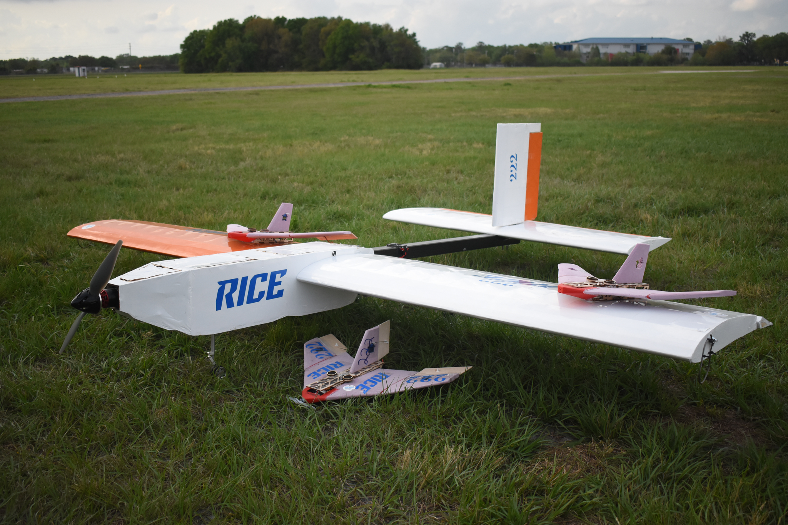
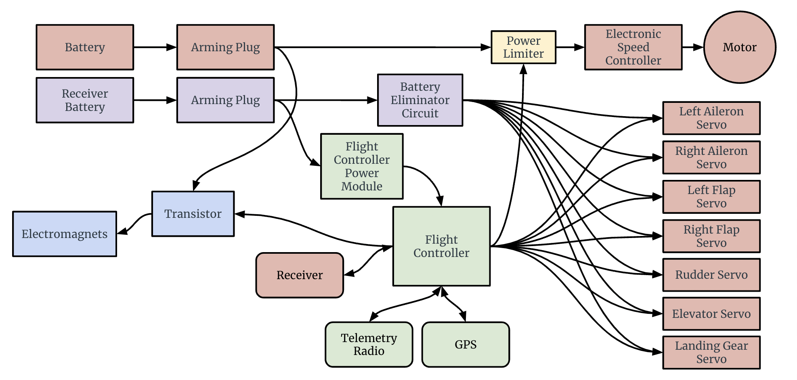

Albatross
 Albatross was Rice Flight's entry into the 2024 SAE Aero Advanced competition. I designed all of the avionics in both Albatross itself as well as the Powered Autonomous Delivery Aircrafts (PADAs), which were fully autonomous and integrated GPS, accelerometers, and an ultrasonic rangefinder to land in target zones after being deployed in flight by Albatross.
The primary aircraft used a Cube Orange+ flight controller running Ardupilot, and communicated to the ground with a 915MHz telemetry radio to control payload deployed. The wiring diagram for Albatross is shown below.
